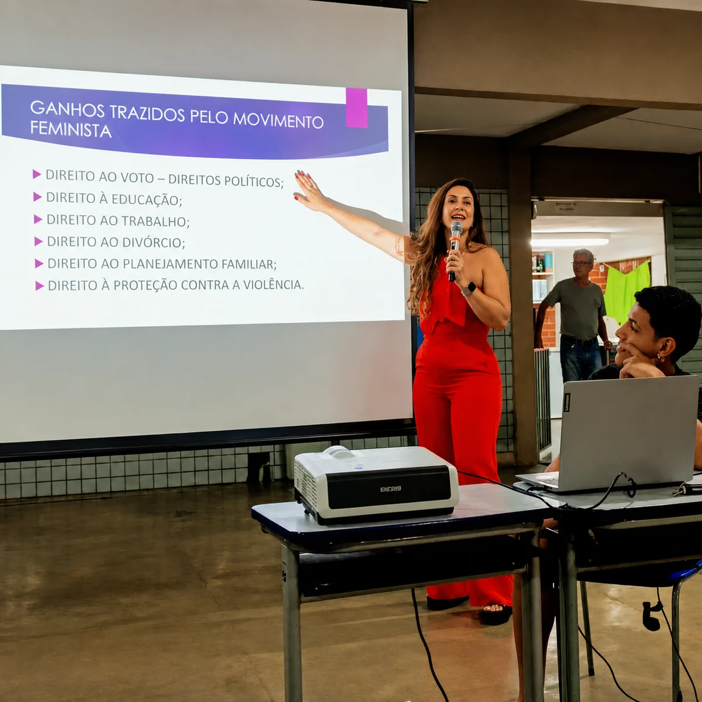
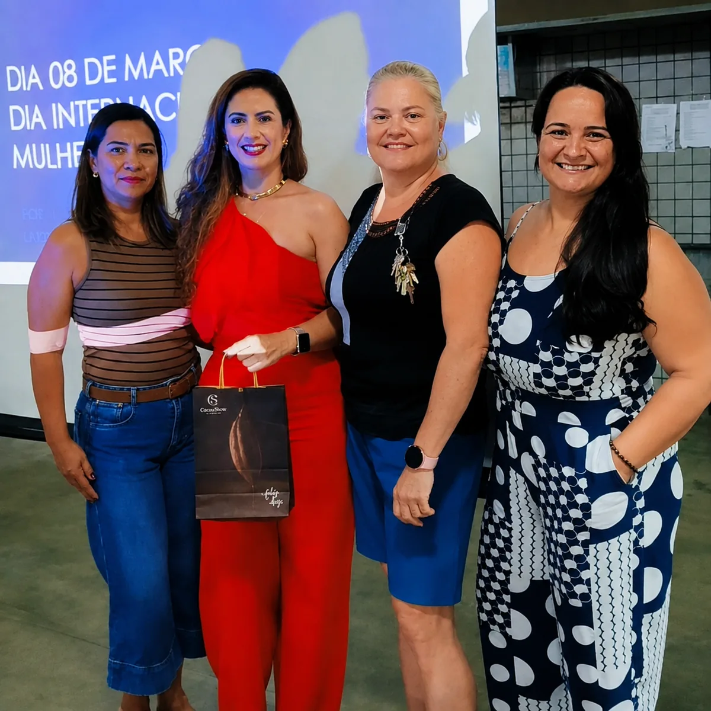
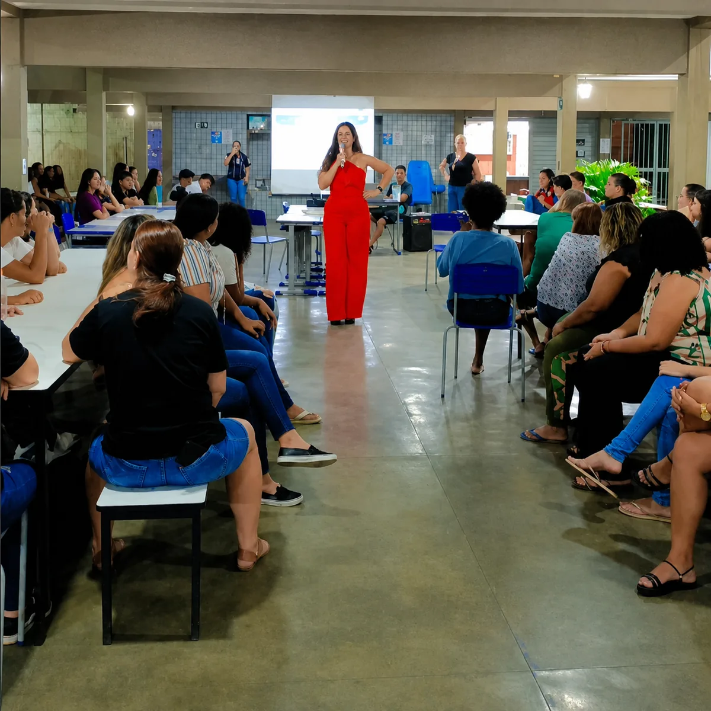
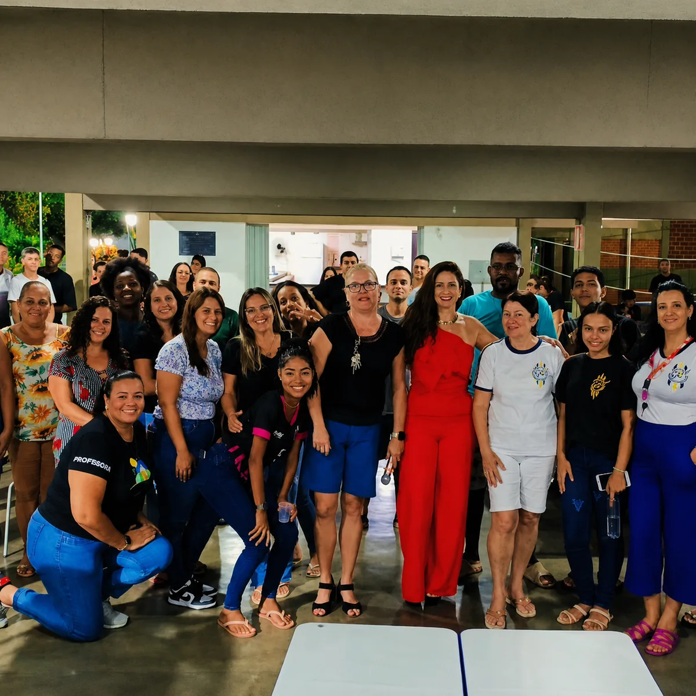

Primeiro contato pelo WhatsApp para entender o caso e direcionar os próximos passos.
Advocacia humanizada e estratégica
Antes de falar com uma advogada, descubra o caminho jurídico para o seu momento.
Uma experiência interativa para orientar o primeiro passo. Responda algumas perguntas, veja a área indicada e fale com a Dra. Larissa com mais clareza sobre o que precisa.
Atendimento em todo o Brasil
Orientação jurídica com base em Muriaé e alcance nacional.
A Dra. Larissa Cerqueira atende clientes de diferentes cidades do Brasil pelo WhatsApp, organizando o primeiro contato de forma clara e responsável. Para quem está em Muriaé e região, o atendimento presencial pode ser combinado previamente.
Atendimento presencial mediante agendamento no Centro de Muriaé.
Centro, Muriaé/MG - 36.880-001
Abrir rota



Palestras e ações educativas
Informação e conscientização sobre os direitos das mulheres.
Em ações realizadas em escolas e espaços comunitários, Larissa leva conhecimento jurídico de forma clara, aproximando a comunidade de temas que fortalecem cidadania, proteção e responsabilidade social.
A palestra abordou direitos conquistados pelo movimento feminista, proteção contra a violência, igualdade entre homens e mulheres e o papel da informação na transformação da sociedade.
Ver publicação no InstagramDiagnóstico interativo
Responda como se fosse uma conversa inicial.
A ideia é reduzir a ansiedade do visitante. Ele não precisa saber o nome da área jurídica; basta escolher o que está vivendo.
Etapa 1 de 3
O que melhor descreve o seu momento?
Etapa 2 de 3
Qual é o nível de urgência?
Etapa 3 de 3
Como você prefere ser atendido?
Mapa de ajuda
Escolha uma porta de entrada. O site responde com movimento.
Em vez de uma lista comum de áreas, cada tema funciona como ponto de orientação. Ao clicar, a pessoa entende rapidamente onde a advocacia pode ajudar.
Direito de Família
Quando a decisão envolve afeto, patrimônio e futuro.
Orientação para divórcio, guarda, pensão, inventário e organização de acordos familiares, com cuidado e estratégia.
01
Escuta
O atendimento começa por uma escuta ativa, com análise do que é importante para você.
02
Estratégia
Cada caso recebe uma leitura própria, com avaliação de risco adequada ao direito e apresentação de solução.
03
Defesa
Atuação técnica para garantir direitos com firmeza e responsabilidade.
Conteúdo inteligente
Dúvidas frequentes respondidas com clareza.
Perguntas comuns recebem uma orientação inicial, sem substituir a análise individual do caso. Quando fizer sentido, o próximo passo é conversar pelo WhatsApp.
Tenho direito à pensão?
A pensão depende da necessidade de quem pede, da possibilidade de quem paga e das provas do caso. A orientação jurídica ajuda a calcular, pedir, revisar ou cobrar valores.
Conversar sobre pensãoComo proteger uma pessoa idosa?
Quando existe abuso, negligência, conflito familiar ou risco ao patrimônio, é possível avaliar medidas de proteção, curatela, orientações aos familiares e providências urgentes.
Conversar sobre pessoa idosaQuando fazer inventário?
O inventário deve ser analisado após o falecimento para organizar bens, dívidas e herdeiros. Dependendo do caso, pode ser feito de forma judicial ou em cartório.
Conversar sobre inventárioCobrança abusiva: o que fazer?
Guarde comprovantes, mensagens, contratos, boletos e prints. A análise jurídica verifica se houve abuso, cobrança indevida, negativação irregular ou falha na prestação do serviço.
Conversar sobre cobrançaComo organizar um acordo?
Um acordo precisa deixar claro quem assume cada obrigação, prazos, valores, documentos e consequências em caso de descumprimento. A formalização evita novos conflitos.
Conversar sobre acordoContato
Depois do primeiro clique, o próximo passo é conversar.
Envie uma mensagem com o resumo do caso. O atendimento pode ser alinhado pelo WhatsApp e, quando necessário, realizado presencialmente em Muriaé.
Av. Juscelino Kubitschech, 1.349, sala 101Centro, Muriaé/MG - 36.880-001
Compromisso com a sociedade
A presença social deixa a advocacia mais humana.
A trajetória de Larissa pode ser apresentada como uma extensão da sua vocação jurídica: participar, ouvir e defender os direitos da comunidade.